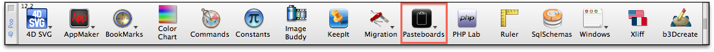
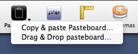
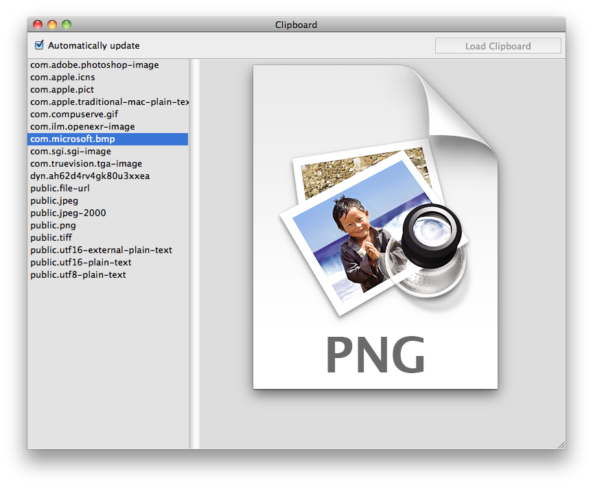
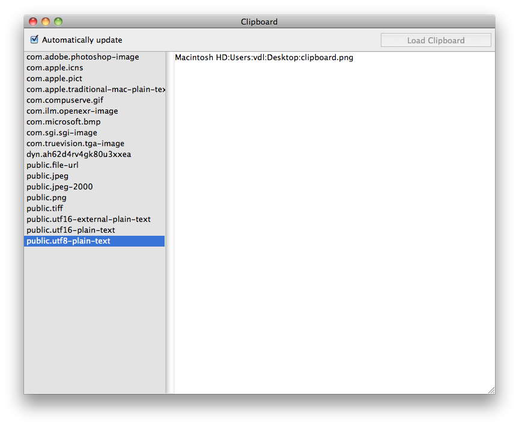
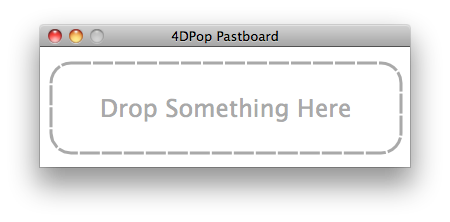
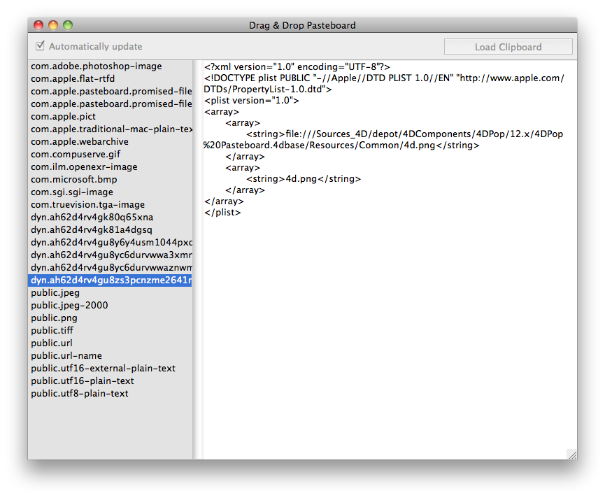

|
|
||||
4DPop Pasteboard is a pasteboards visualising tool. It allows, among
others, to explore the contents of the copy/paste pasteboard
(clipboard) as well as inter-application drag and drop. (See Managing Pasteboards in the documentation)
Installation
| 1. | Create a "Components" folder next to the structure file of your database* (".4db") |
| 2. | Place the "4DPop
Pasteboard.4dbase"** folder or an alias of this one in the "Components" folder. |
| 3. | Open your database. |
| 4. | If you use the component "4DPop",
the tool "Pasteboards" is displayed
automatically in the Tool bar.  |
* If you want the component be available for all your
developments, use the "Components"
folder of 4D, ie, at the root of the folder "Content"
of the package "4D.app" on
Macintosh or next to the file "4D. exe"
on PC.
** On Macintosh the component is a package, it appears as a file
whose extension is ".4 dbase. " This extension is not necessarily
visible according to the adjustments of your preferences of display.
Use
When you click the button "Pasteboards" a menu is presented that lets you select one of the tools available.

- "Copy/paste
Pasteboard…" displays the explorer of the clipboard's
contents. The left list shows the data types available in the
container, the right pane displays the contents of the selected item,
an image or a text, when possible. The checkbox "Automatically update" allows the browser
to automatically load the contents of the clipboard when the window is
activated. If this option is disabled, you must click on the button "Load Clipboard" to perform a manual
update from the current clipboard.

 - "Drag
& Drop pasteboard…" displays a window that waits a
drag and drop action. Upon receiving, the browser opens and displays
the data being dropped. In this case, the buttons for update are
disabled.


Source code provided
This component is provided in compiled version but you can find the source code in the "SOURCES" folder that is located inside the component folder.